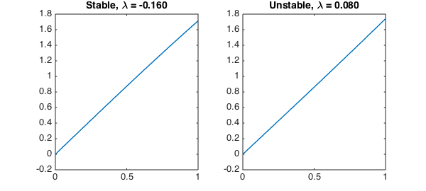
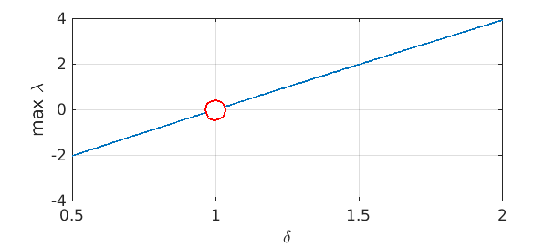

Suppose a thermoelastic rod is fixed to a wall at one end and may expand to make contact with a wall at the other end. J. R. Barber [1] proposed a boundary condition that models a physically realistic transition between thermal insulation, when far from contact, and perfect thermal contact.
Linear stability analysis suggests a change from stable to unstable behavior as the temperature difference between the walls increases. The eigenvalue problem governing the stability of the perturbation $\phi(x)$ is nondimensionally
$$ \phi''(x) = \lambda \phi(x),\qquad 0 < x < 1, $$
$$ \phi(0) = 0,~~ \phi'(1) + \phi(1) = 4 \delta\int_0^1\phi(x) dx , $$
where the value of $\delta$ is a function of the thermal gradient. The transition from stable to unstable happens at $\delta=1$. The presence of the integral of $\phi$ in the boundary condition makes the problem unusual from a classical standpoint, but from the Chebfun point of view it's just another linear boundary condition.
First, we solve the eigenvalue problem in a stable case.
N = chebop( @(x,u) diff(u,2), [0 1] ); % operator on 0<x<1 N.lbc = 0; % fixed end delta = 0.96; % stable choice N.bc = @(x,u) feval(diff(u),1) + u(1) - 4*delta*sum(u); % Barber condition [Vs,Ls] = eigs(N,4,0); % eigenmodes closest to zero
The eigenvalues are all negative, indicating stability:
format long diag(Ls)
ans = 1.0e+02 * -1.234915472724630 -0.626486098335608 -0.251462532662759 -0.001601435706946
Here is what happens in a slightly unstable case:
delta = 1.02; % unstable choice N.bc = @(x,u) feval(diff(u),1) + u(1) - 4*delta*sum(u); % Barber condition [Vu,Lu] = eigs(N,4,0); diag(Lu)
ans = 1.0e+02 * -1.235278901227600 -0.625884455974818 -0.252000055363520 0.000799646105231
Here we see the perturbation which is least stable in the first case, or unstable in the second case.
LW = 'linewidth'; MS = 'markersize';
subplot(1,2,1)
plot(Vs(:,4),LW,1.6)
title(sprintf('Stable, \\lambda = %.3f',Ls(4,4)))
subplot(1,2,2)
plot(Vu(:,4),LW,1.6)
title(sprintf('Unstable, \\lambda = %.3f',Lu(4,4)))

The solutions above look linear, but they do have significant Chebyshev coefficients out to degree 8.
Without knowing the transition value $\delta=1$ in advance, we could locate it through a simple Chebfun rootfinding search. First, we parameterize the boundary conditions and the maximum real eigenvalue.
BC = @(delta) @(x,u) [u(0); feval(diff(u),1) + u(1) - 4*delta*sum(u)]; maxlam = @(delta) eigs( chebop(@(x,u)diff(u,2),[0 1],BC(delta)), 1, 0 );
Then, we construct a chebfun for the maximum $\lambda$. A polynomial of degree 10 captures the behavior of the maximum eigenvalue to about 11 digits.
stability = chebfun(maxlam,[0.5,2],'eps',1e-11,'vectorize')
stability =
chebfun column (1 smooth piece)
interval length endpoint values
[ 0.5, 2] 11 -2 3.9
Epslevel = 1.000000e-11. Vscale = 3.928224e+00.
Finally, the transition in stability occurs when the eigenvalue passes through zero.
dstar = find(stability==0)
clf, plot(stability,LW,1.6), hold on, plot(dstar,0,'ro',MS,16)
xlabel('\delta'), ylabel('max \lambda'), grid on
dstar = 1.000000000023135

References
-
J. R. Barber, "Contact problems involving a cooled punch," Journal of Elasticity, 8 (1978), 409-423.
-
J. A. Pelesko, "Nonlinear stability, thermoelastic contact, and the Barber condition", Journal of Applied Mechanics, 68 (2001), 28-33.